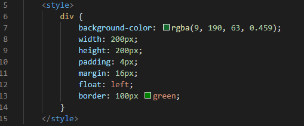
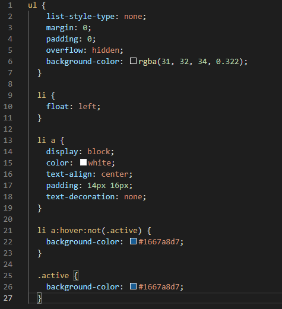
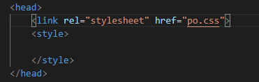

The Inline CSS method's purpose is adding styles to different elements. This is done by applying the "style" attribute to a chosen HTML element that u want to add a style to. As an example I have changed the font of the title, here's how I did this:
The Inline method is maily useful for giving different elements like headers and boxes, their own styles.
The internal method's main purpose is styling a page. It enables a user to give a page a specfic style, different to the rest, rather than giving a style to one element. This is done by adding the "style" tag in the "head" tag of the HTML page. In the following screenshots is how I styled a box using the style tag:
Using external CSS an external page can be linked to copy its style. In practise, this occurs in the 'head' tag by referencing a 'link' attribute. The link attribute has to be a css file for its styles to be copied. The following screenshots show the code, which link an external CSS file to the website:
 A benefit of external CSS is that it is able to keep all of style data within one file, whilst all pages have the same very short codes. This is very useful for websites in which many pages are meant to have the same style. It also means if you need to make changes to the external CSS file, all pages are updated to the newly changed CSS file, making implementations of new styles way easier than other CSS methods.